The tools that run a service business.
Software that sits between the customer and the diary. Broad tools fit any business that takes enquiries and books jobs. Specific tools are built around one trade’s actual day. Every one runs live with invented data and has a reset inside.
Which tools work for any service business?
The ones that sit between the customer and the diary: taking the booking, chasing the quote, texting back a missed call, asking for the review, keeping every enquiry in one list. They do not care what the trade is.
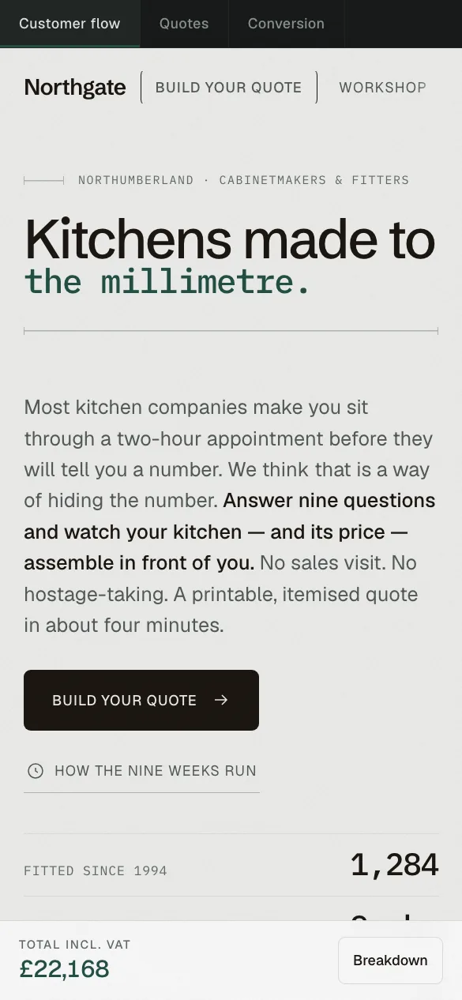
Northgate Quote EngineTool · Broad · Kitchen fitter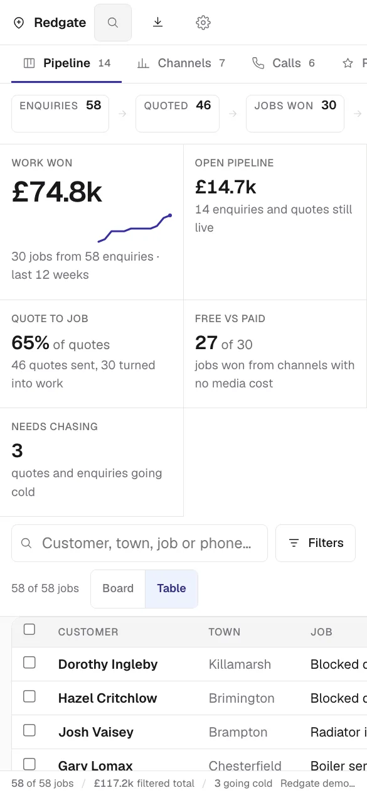
Redgate Job & Lead SystemTool · Broad · Heating & plumbing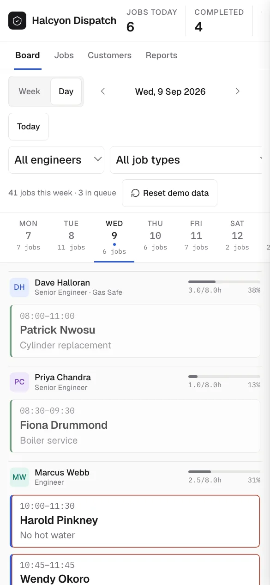
Halcyon DispatchTool · Broad · Heating dispatch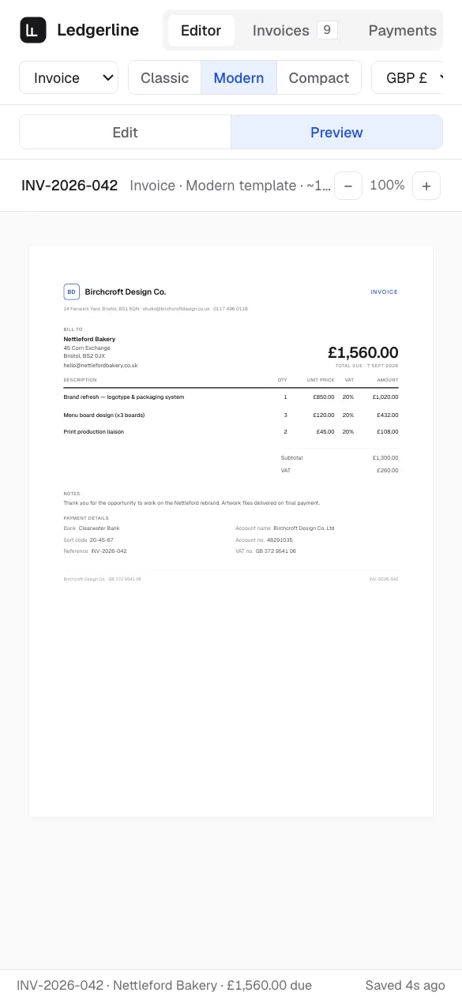
LedgerlineTool · Broad · Any trade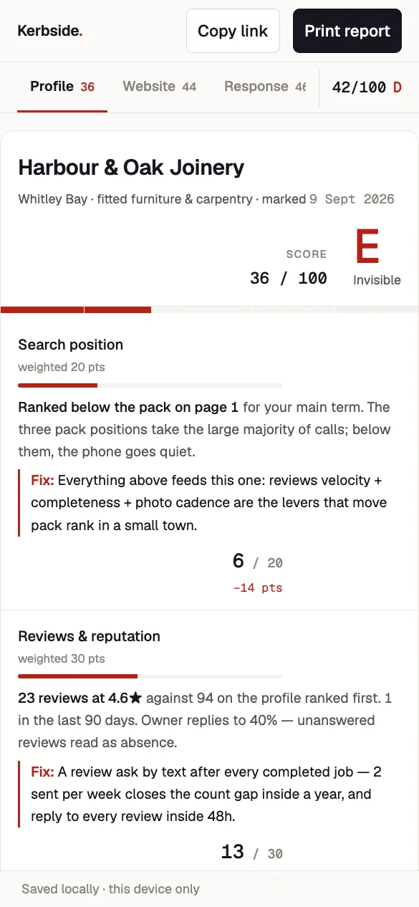
Kerbside ScorecardTool · Broad · Any local business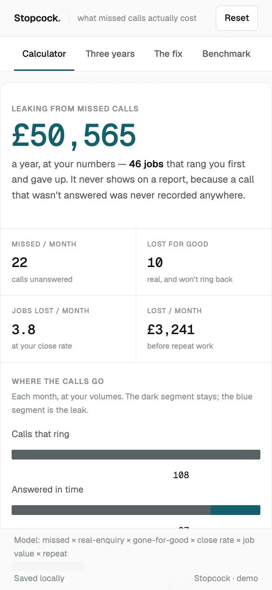
StopcockTool · Broad · Any trade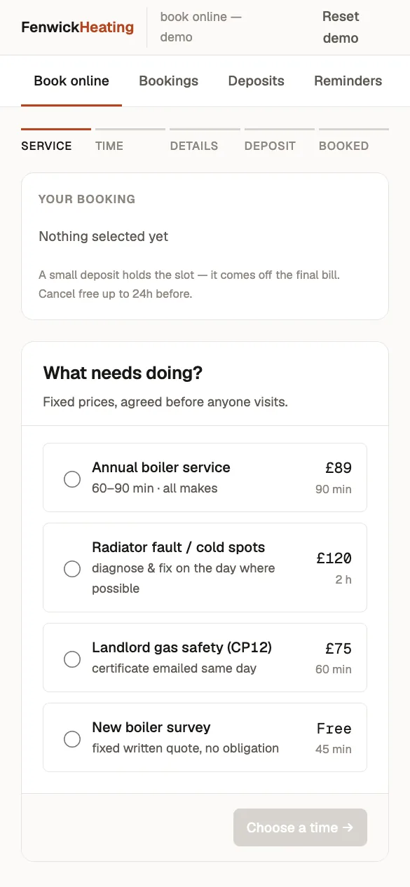
Fenwick BookingTool · Broad · Heating engineer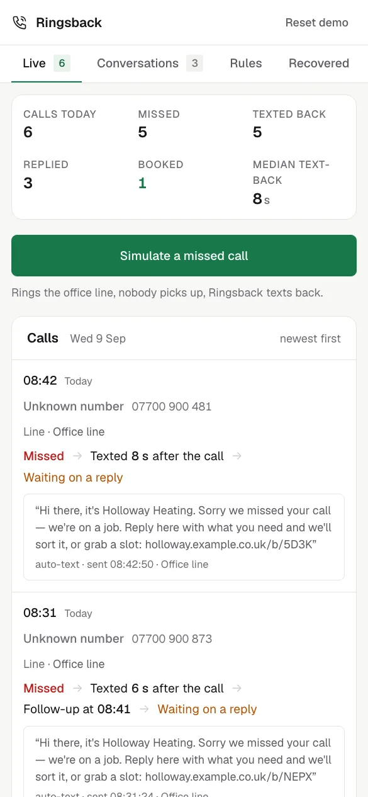
RingsbackTool · Broad · Any service business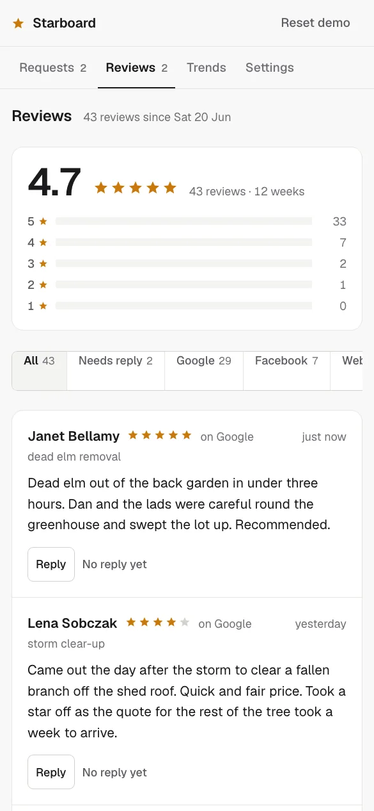
StarboardTool · Broad · Any local business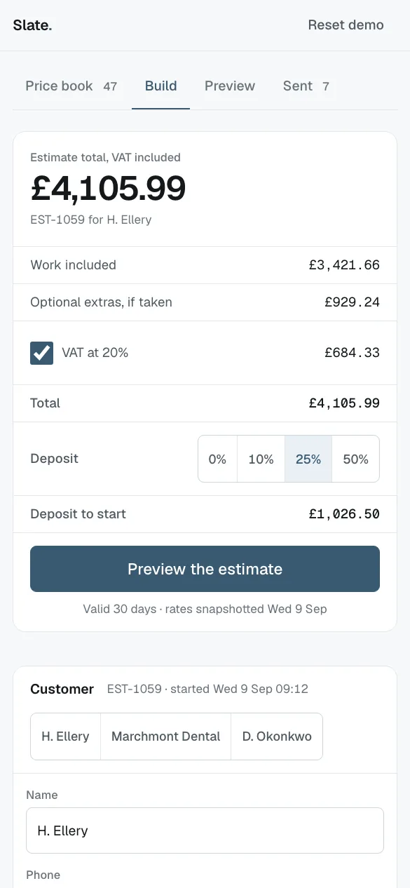
SlateTool · Broad · Any service business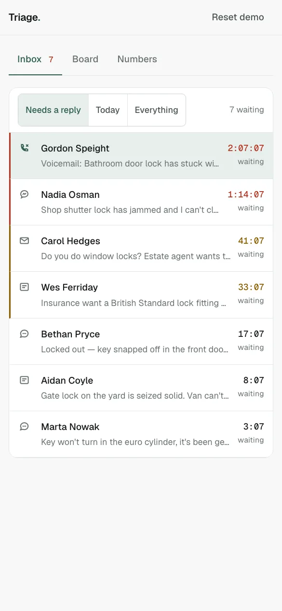
TriageTool · Broad · Any service business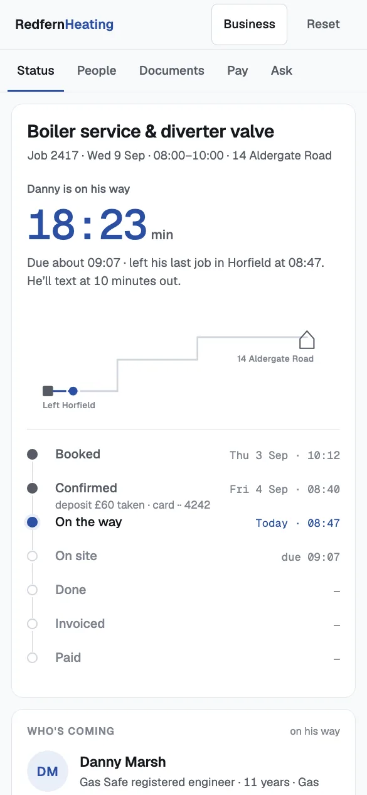
DoorstepTool · Broad · Any service business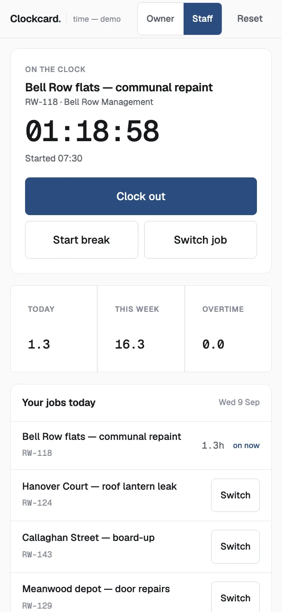
ClockcardTool · Broad · Any service businessWhat does a tool built for one trade look like?
It knows the trade’s calendar and its paperwork. A heating engineer’s tool knows a boiler is due every twelve months; a salon’s knows a client rebooks at the till; a window cleaner’s knows the round runs in door order and shifts when it rains.
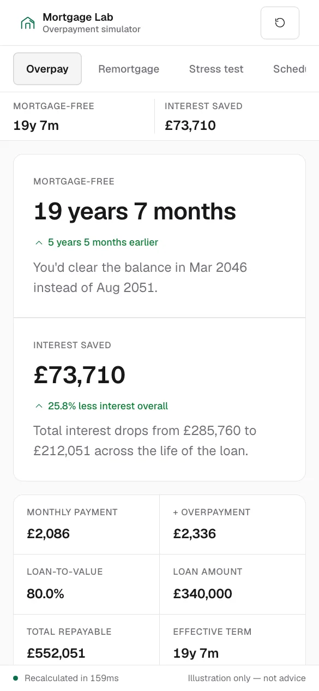
Mortgage LabTool · Specific · Mortgage broker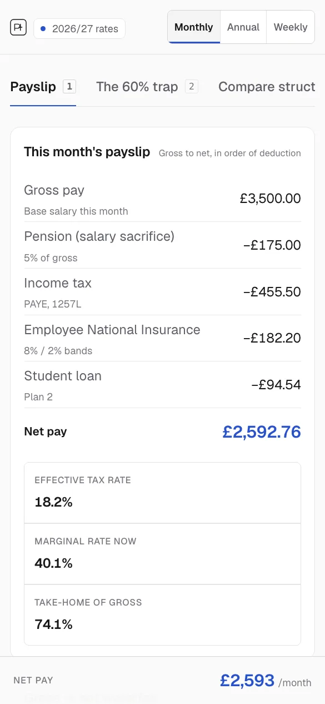
Payslip LabTool · Specific · Accountant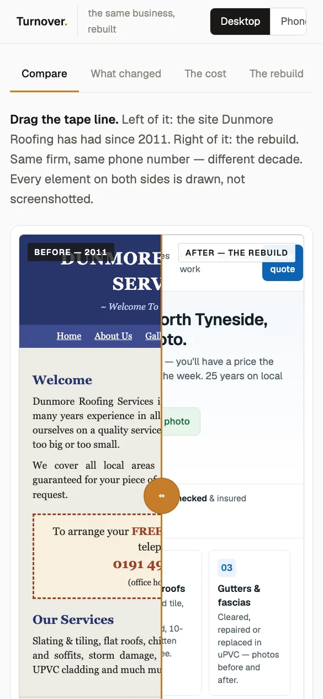
TurnoverTool · Specific · Roofer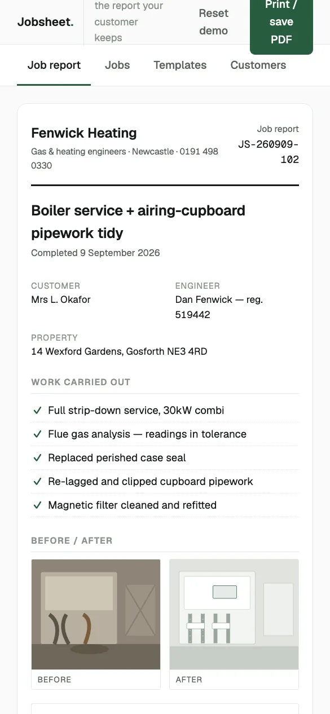
JobsheetTool · Specific · Any trade with a van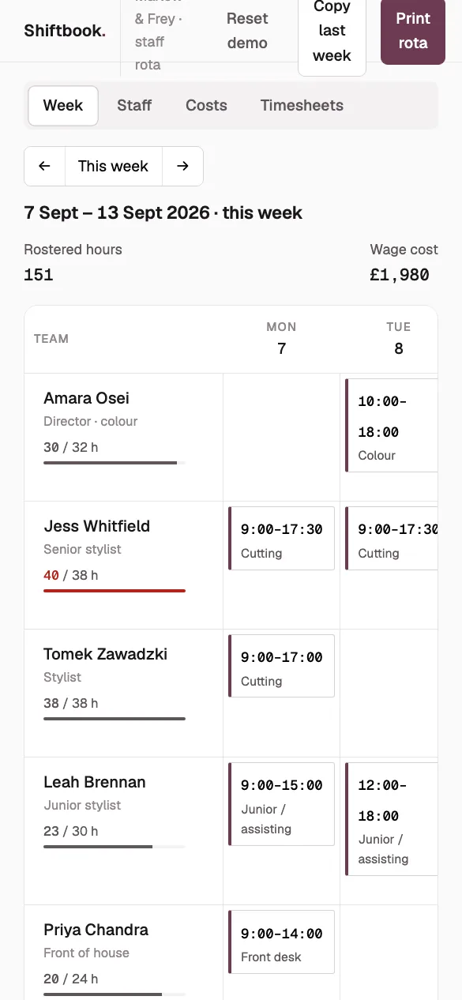
ShiftbookTool · Specific · Hair salon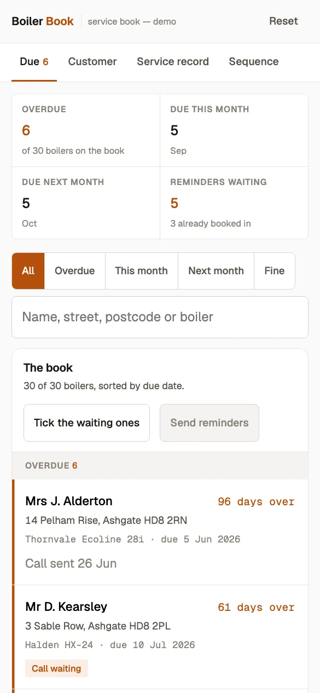
Boiler BookTool · Specific · Heating engineer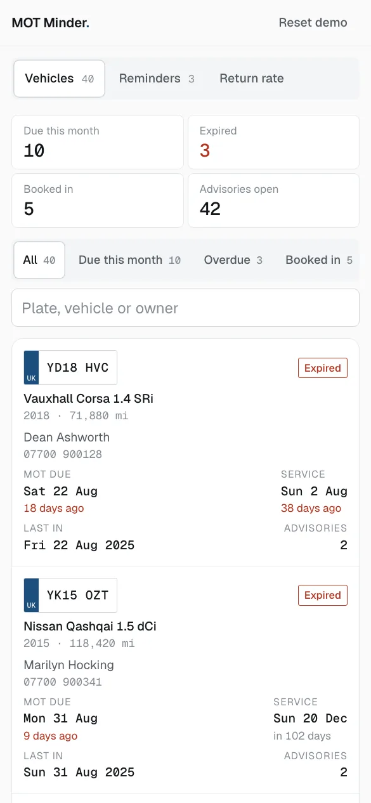
MOT MinderTool · Specific · Garage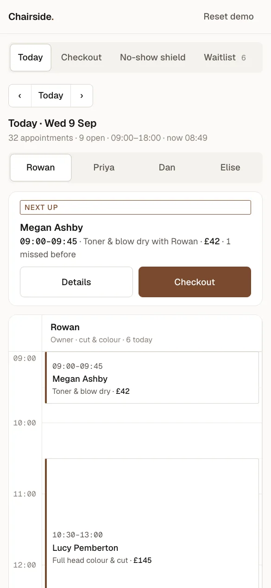
ChairsideTool · Specific · Hair salon TurntableTool · Specific · Restaurant
TurntableTool · Specific · Restaurant
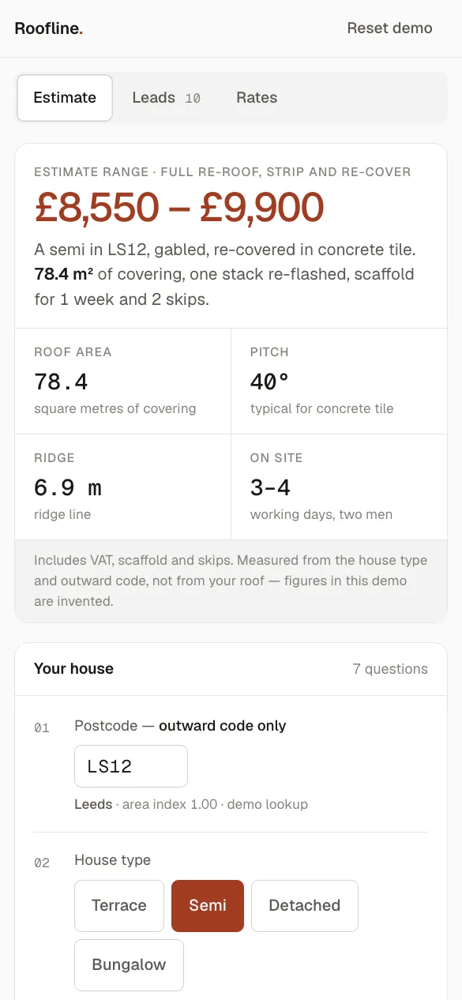
RooflineTool · Specific · Roofer RoundsheetTool · Specific · Window cleaner
RoundsheetTool · Specific · Window cleanerWhich tools are built for my trade?
- Accountant
- Payslip Lab
- Any local business
- Kerbside Scorecard · Starboard
- Any trade
- Ledgerline · Stopcock
- Any trade with a van
- Jobsheet
- Garage
- MOT Minder
- Heating & plumbing
- Redgate Job & Lead System
- Heating dispatch
- Halcyon Dispatch
- Heating engineer
- Fenwick Booking · Boiler Book
- Kitchen fitter
- Northgate Quote Engine
- Mortgage broker
- Mortgage Lab
- Restaurant
- Turntable
- Window cleaner
- Roundsheet